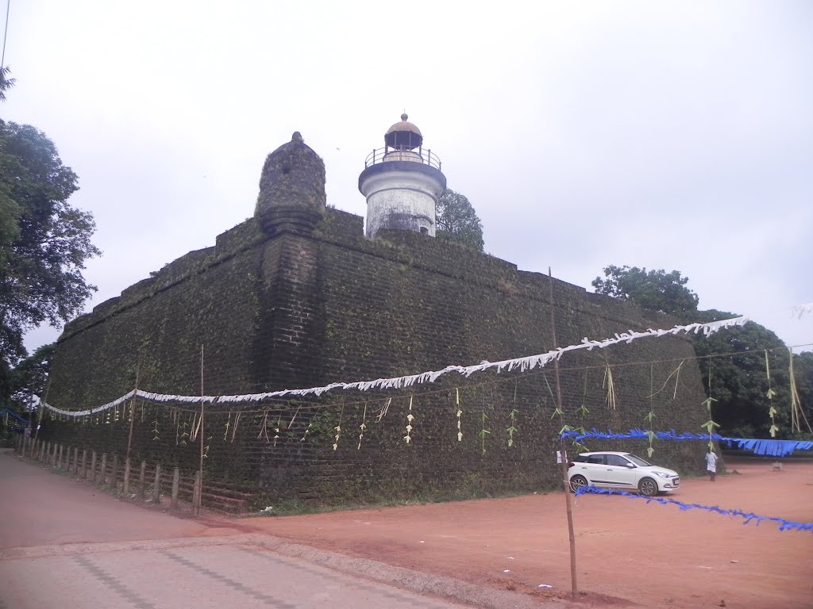
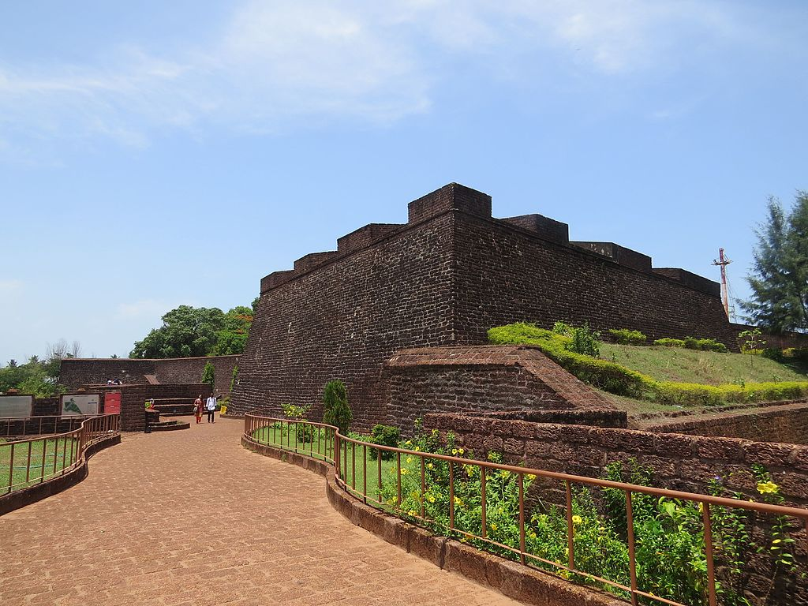

Kannur is also known as Cannanore, is a city in Kannur district in the Indian state of Kerala. This is the administrative headquarters of the District of Kannur. Kannur is known as the Land of Looms and Lores, because of the loom industries functioning in the district and ritualistic folk arts held in temples. This is the largest city of North Malabar region. Kannur Municipality is one of the oldest municipalities in Kerala.

Thalassery Fort
The fort is a square structure built of laterite and is distinguished by its massive ventilated walls and strong flanking bastions.The fort has secret tunnels to the sea and intricately carved huge doors. It was here that Haider's captain was imprisoned.

St. Angelo Fort
St. Angelo's Fort was built in 1505 by Dom Francisco de Almeida, the first Portuguese Viceroy of India and is on the Arabian sea about 3 km from Kannur town. It was attacked in vain by the local Indian ruler in the Siege of Cannanore (1507).
Payyambalam Beach
One of the most beautiful beaches in the state of Kerala is at a distance of 2 km from Kannur town. This beautiful stretch of sand and surf is the best place for a relaxing holiday.
Kannur district derived its name from the location of its headquarters at Kannur town. The old name 'Cannanore' is the anglicised form of the Malayalam word Kannur. According to one opinion, 'Kannur is a derivation from Kanathur, an ancient village, the name of which survives even today in one of the wards of Kannur Municipality. Another version is that Kannur might have assumed its name from one of the , deities of the Hindu pantheon, a compound of two words, Kannan (Lord Krishna) and Ur (place) making it the place of Lord Krishna. In this context, it is worth mentioning that the deity of the Katalayi Sreekrishna temple was originally installed in a shrine at Katalayi Kotta in the south eastern part of the present Kannur town.